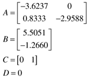

| 1: | Consider a first-order + time-delay transfer function
which has the following response to a step input change at t = 0:
Show that the maximum rate-of-change (slope) of the output occurs at t = q. Also, find this slope. |
| 2: | Consider the response of a first-order + time-delay transfer function to a step input change. Find the value of the output (y) at the following times, as a fraction of the long-term output change
Find the time constant and time-delay based on the values of t1 and t2. |
| 3: | Consider the following step response. Estimate parameters for a first-order + time-delay model using the three techniques shown in Section 4.3. Include the units for each parameter. |
| 4: | Consider the following step response. Estimate the parameters for an integrator + time-delay model, including the units for each parameter. |
| 5: | Consider the following continuous state space model:

Find the continuous transfer function model (do this analytically). For a sample time of 0.25, find the discrete state space and transfer function models (use MATLAB; see Module 4). Compare the step responses of the continuous and discrete models (use MATLAB). What do you observe?
|
| 6: | Consider the discrete-time model
using z-transforms, find the corresponding model represented as equations (4.11), (4.12) and (4.13). Discuss the stability of the process. |
| 7: | Consider a unit step input change made at k = 0, resulting in the output response shown in the plot and table below.
k -1 0 1 2 3 4 5 6 7 8 9 10
y 0 0 0.1044 0.3403 0.6105 0.8494 1.0234 1.1244 1.1616 1.1531 1.1184 1.0746
u 0 1 1 1 1 1 1 1 1 1 1 1
k 11 12 13 14 15 16 17 18 19 20
y 1.0336 1.0023 0.9828 0.9744 0.9742 0.9790 0.9860 0.9929 0.9985 1.0022
u 1 1 1 1 1 1 1 1 1 1
Estimate the parameters for a discrete linear model with the form
Compare the step response of the estimated model with the data. Use MATLAB to convert the discrete model to a continuous model. Compare the step responses of the discrete and continuous models. |
| 8: | Consider Example 4.4 with measurement noise on the output variable, as shown below. Estimate the discrete model parameters based on this data. How do the parameters compare with those of Example 4.4? Compare the step responses of the two models.
The input/output data are
k -1 0 1 2 3 4 5
y 0.0741 -0.0857 -0.0399 0.1663 0.4065 0.1521 0.3910
u 1.0000 1.0000 1.0000 -1.0000 1.0000 -1.0000 -1.0000
k 6 7 8 9 10 11 12
y 0.2284 -0.2569 0.0910 -0.1737 -0.1260 0.0668 0.1958
u 1.0000 -1.0000 1.0000 1.0000 1.0000 1.0000 -1.0000
k 13 14 15 16 17 18 19
y 0.4976 0.3724 0.0119 0.0927 -0.0528 0.1357 0.0580
u -1.0000 1.0000 -1.0000 1.0000 -1.0000 -1.0000 -1.0000
|
| 9: | Consider the continuous state space model (where the time unit is minutes)
Find the eigenvalues and the transfer function (use MATLAB for these calculations, if desired) Using a sample time of 3 minutes, find the discrete state space model and the discrete transfer function. Refer to the Appendix for the form of the discrete state space model, and Module 4 to understand how to use MATLAB for these computations.
|